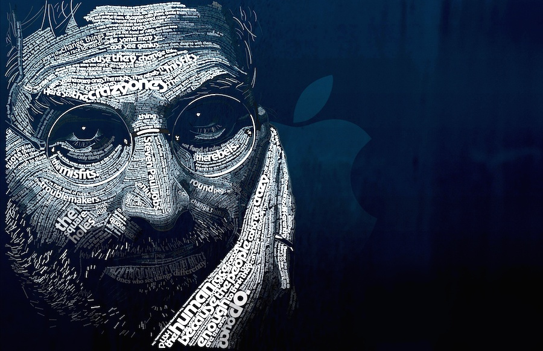
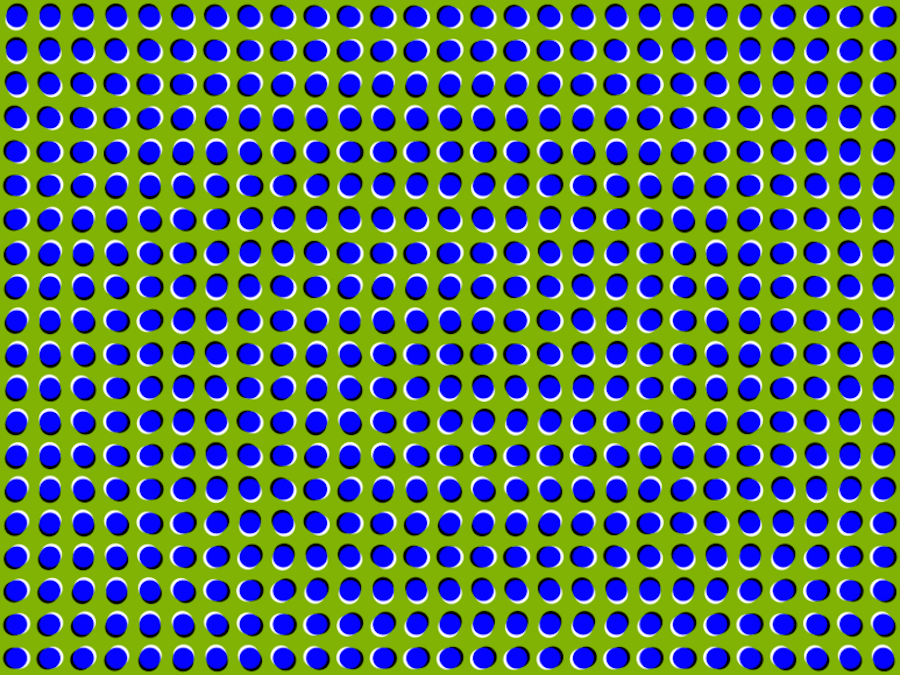
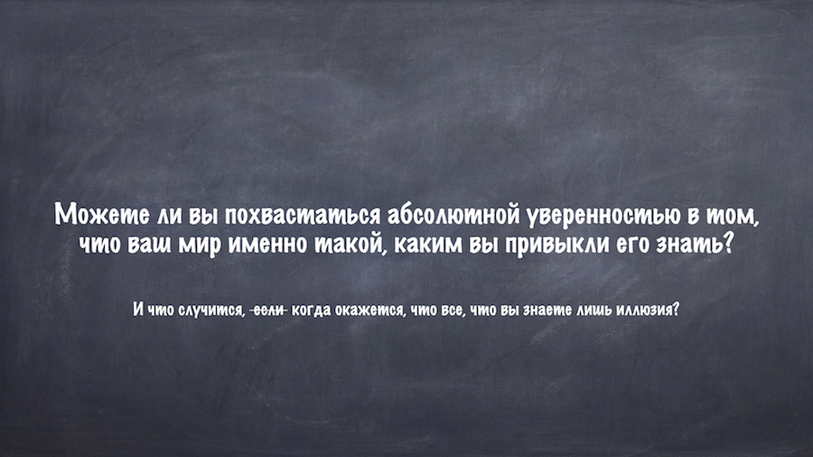
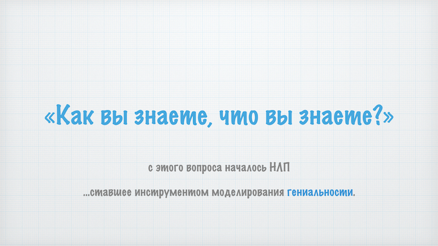
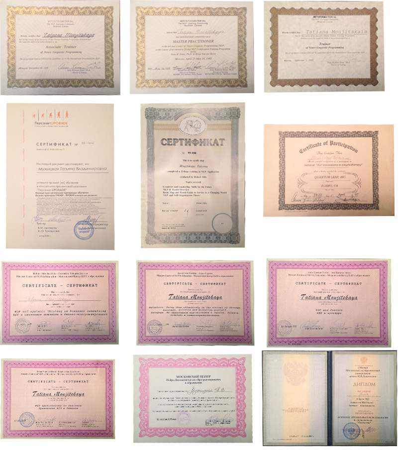

НЛП-мастер в бизнесе
Эксклюзивный курс Татьяны Мужицкой и Егора Булыгина с трансляцией в прямом эфире
Что такое мастерство,
и как его смоделировать
у тех, кто гениален в своем деле?

Как устроен человек,
и как кодируются его процессы?
И вообще...
Уверены ли вы,
что то, что вы видите каждый день реально?

Возможно, вы очень успешны...
Возможно, вы полностью счастливы...
Возможно, вы много знаете, в чем-то очень хороши,
и даже имеете сертификат НЛП-практика...
Но


Обзорная программа курса

Смотрите, какие возможности это открывает:
Моделирование
- Умение быстро обучаться у носителя модели (мастера или гения в каком-либо деле), просто наблюдая, что и как он делает.
- Умение "очищать" навык от личных паттернов носителя модели (так как многие гении, преуспевшие в чем-либо одном, не настолько же успешны в других обастях своей жизни).
- Умение кодировать навык, чтобы можно было его записать как технику и передать другим людям.
- Умение "встраивать" этот навык себе, другому человеку или группе.
Стратегии мышления
- Самомоделирование и самопрограммирование / распрограммирование.
- Системный взгляд на себя: в чем ваши слепые пятна (области тьмы) и что вы систематически упускаете из виду?
- Как мы знаем, что мы знаем? Стратегия реальности и умение ей управлять.
- Стратегии управления своим состоянием (вплоть до искусственного алкогольного и наркотического опьянения).
- Стратегия принятия решения и умение управлять ею.
- Речевые стратегии.
- Гипнотические стратегии и милтон-модель.
Продвинутые НЛПерские фишки
- Продвинутая калибровка и экстра-сенсорика (умение видеть спиной, слышать телом, чувствовать за пределами чувств).
- Суперпамять, реимпринтинг за 3 минуты, внутренний тайм-менеджер и органайзер.
- Игра "Менталист".
- Повышение эффективности работы мозга в 2,5 раза (Новый Код НЛП, High Performance State).
- Технология "Голос могущества".
- Симбиоз "Человек-гаджет".
- Продвинутое использование реп-систем, картирование, инфографика.
- Препарирование типологий личности (мета-типология).
Мастерское ведение переговоров
- Стратегия убеждения человека, позволяющая доказать все что угодно
- Фокусы языка, речевые фреймы, управляющие восприятием человека
- Раскрутки НЛП, спобные логично и осмысленно опровергнуть любое убеждение
- Мастерская работа с возражениями (в том числе и своими)
- Создание изменений на уровне убеждений, идентичности и миссии
- Метапрограммы (вербальные и невербальные) и умение говорить на "языке мозга" собеседника, понимая его лучше, чем он сам понимает себя.
И только в программе этого мастерского курса:
На каждом модуле мы будем моделировать гениальность одного из родоначальников НЛП.
И вы узнете, что такое:
- Парадоксальное мышление Ричарда Бэндлера
- Мета-картирование Джона Гриндера
- Провокативный стиль Фарелли
- Гипнотические паттерны Милтона Эриксона
- Типологии бинес-организаций по Фрэнку Пьюселику
- Шаманская реальность Джудит Делозье
- Терапия личной жизни Лэсли Кэмерон
- НЛП 3-го поколения Роберта Дилтса
- Язык описания и создания методологий Энн Энтус
- ...А так же, что такое центрирование и почему каждый профессиональный НЛПер должен владеть 8-й техникой Джона Гриндера.
ВАЖНО!
Учитывая, что это мастерский курс, тренер имеет право отказать в прохождении курса любому участнику без объяснения причин.
Отзывы выпускников Татьяны Мужицкой
«Татьяна - одна из важнейших встреч в последние 5-6 лет, которая со мной произошла»
|
Александр, ТОП-менеджер крупной американской компании |

Стали руководителями, владельцами бизнеса. НЛП помогло разобраться в том, чего хочется.
|
|
|
|
Артем Готманов руководитель направления в коммерческом банке (топ 10) |
Михаил Волчков, генеральный директор фирмы по производству |


Всё в этой жизни возможно. Открыли новый бизнес, избавились от страхов.
 |
 |
| Сергей Моисеев, бизнесмен, бизнес-тренер | Максим Дранко, бизнес-тренер |
Появились новые способности, и жизнь стала богаче
|
|
|
| Никита Шардынцев, инженер-разработчик авиационных систем |
Алексей Беккер, режиссер |
|
|
|
|
Татьяна Лебедева, финансист
|
Олеся, бухгалтер
|
.png)


«Мечтал бизнес открыть - бизнес открыл, мечтал о счастливой семье – создал»
Наиль Хафизов, человек, который строит свою жизнь сам
 До тренинга Мужицкой для меня НЛП было наукой. После тренинга Мужицкой - это стало искусством. НЛП от Татьяны Мужицкой отличается от других НЛП. Раньше я понимал это как инструмент, как какую-то технологию, последовательность действий определенную. А после Мужицкой я понял, что это такая игра, в которую можно играть и получать от этого удовольствие. И теперь я играю, получаю удовольствие и всем рекомендую.
До тренинга Мужицкой для меня НЛП было наукой. После тренинга Мужицкой - это стало искусством. НЛП от Татьяны Мужицкой отличается от других НЛП. Раньше я понимал это как инструмент, как какую-то технологию, последовательность действий определенную. А после Мужицкой я понял, что это такая игра, в которую можно играть и получать от этого удовольствие. И теперь я играю, получаю удовольствие и всем рекомендую.
Проходил я тренинг года два назад, изменился, по-моему, во всем: в подходе к жизни, в моих взглядах - изменились взгляды на все. Результаты огромные - много всего достиг. Ну, например, мечтал бизнес открыть - бизнес открыл. Мечтал попутешествовать – съездил в несколько стран. Мечтал познакомиться с интересными людьми – познакомился. Мечтал о счастливой семье – создал. И то, чего я достиг – это как раз результат применения навыков, о которых я узнал, и того, чему научился на тренинге.
Я не буду называть конкретные инструменты, их много. Просто когда их применяешь в комплексе, они дают определенную квинтэссенцию и большой результат. Все инструменты НЛП, которые Татьяна дает, запоминаются не каждый по отдельности, а запоминается всё. Вот в этом, плюс ее тренинга. Потому что я был на другом тренинге, там узнаешь инструменты, но можешь запомнить не все. Здесь я запомнил сразу все. Тетрадки, в которые я записывал, никогда не вспоминаю и не читаю. Но то, чему научился, уже никогда не потеряю в жизни.
То, что делает Татьяна, как тренер, – это искусство. Она - художник, который может не просто подать материал, а именно нарисовать что-то новое. Я знаю и ее другие тренинги. И все тренинги похожи друг на друга, а все равно разные и всегда новые, всегда что-то интересное. Ее тренинги интересные, практичные в применении в жизни.
Это не только польза, но и приятное времяпрепровождение - очень комфортная обстановка и даются не только инструменты, а эти инструменты запоминаются с удовольствием, с весельем. Получаешь удовольствие от того что людей узнаешь с разных ракурсов, разные точки зрения, разная жизнь, и, если говорить про чувства, то радость, и, самое главное чувство, мое любимое – это интерес. То есть всегда, когда на курс приезжал из другого города, всегда приезжал с интересом. Я всегда мог отследить – вот оно. И это предвкушение всегда оправдывалось.
Для меня НЛП - искусство и теперь уже образ жизни. Узнал - теперь по-другому никак.
«Как уметь находить баланс среди общих интересов и в то же время продвигать свои»
Михаил Носов, старший менеджер PWC
 До тренинга Татьяны Мужицкой у меня было много ожиданий, связанных с тем, что НЛП - это программирование чужих мозгов. А оказалось, что это работа, прежде всего, над собой и умение понимать других людей, общаться с ними. Вот за этим я и пошёл, за этим я увидел цель и ценность НЛП для себя. А у Татьяны Мужицкой это еще превратилось в некое творческое пространство, и можно было свой творческий потенциал раскрыть. Это было неожиданно потому, что Татьяна дает НЛП в таком необычном свете.
До тренинга Татьяны Мужицкой у меня было много ожиданий, связанных с тем, что НЛП - это программирование чужих мозгов. А оказалось, что это работа, прежде всего, над собой и умение понимать других людей, общаться с ними. Вот за этим я и пошёл, за этим я увидел цель и ценность НЛП для себя. А у Татьяны Мужицкой это еще превратилось в некое творческое пространство, и можно было свой творческий потенциал раскрыть. Это было неожиданно потому, что Татьяна дает НЛП в таком необычном свете.
Еще эмоции были острыми, когда мы, как команда, готовили выступления для группы. У нас был предусмотрен формат, когда на каждый семинар, команды рассказывали о том, какие уроки были на предыдущем занятии. То, как мы к этому подошли, и как мы это презентовали: ярко, по ролям, с красивой презентацией - это мне доставило больше всего удовольствия! Потому что помимо обычного, ожидаемого формата, когда тренер дает материал, а ты уходишь домой, и дорабатываешь это сам в одиночку, здесь еще можно прийти и показать остальным что ты усвоил и как ты это усвоил. И это давало дополнительный заряд, что ты сам стал организатором, со-участником этого тренинга, потому что ты поделился с кем-то своим пониманием этого тренинга.
С момента прохождения тренинга много что поменялось: я и город поменял – из Москвы я перебрался в Казнь, более открытый стал к общению, лучше стал понимать людей, реакцию людей на те или иные вещи. Более трёхмерная картина мира стала. НЛП позволяет найти в себе ресурсы, или найти в себе ограничения, которые можно снять, найти в себе то, на основании чего можно развить и усилить какие-то качества. Я для себя обнаружил открытость в общении, понимание других людей. И такая творческая жилка открылась, появилось желание что-либо создавать, новое, интересное. Мы организовывали с друзьями кружки по интересам и предлагали играть в игры, такие как «Мафия» и «Активити», этого раньше не было. Появилось желание жизнь разбавить и беседами интеллектуальными, и играми интерактивными, я после этого закончил курсы рисования карандашом, такого позыва не было до тренинга.
Татьяна умеет создавать атмосферу, которой окутываешься, обволакиваешься, и зарождается творчество и игра. Приобретаешь друзей и знакомых, именно благодаря тому, что создается атмосфера дружеская, веселая, приятная. И все это на фоне серьёзных концепций НЛП! Наблюдать за процессом, как она ведет тренинг, это уже интересно. И даже более скучные темы, более технологичные она умеет упаковать весело, и провести с повышенным интересом от аудитории, всегда умеет увлечь людей – я не видел, чтобы кто-то спал не ее тренингах. Уникальность Татьяны как раз в умении создавать атмосферу, где приятно учиться, заводить связи, друзей. И если говорить о друзьях на курсе, с которыми я постоянно общаюсь до сих пор, - это ещё один плюс тренинга.
И я бы не ограничивал круг людей, кому может быть полезно НЛП. Если человек открыт к новым знаниям, открыт к постижению самого себя, других людей, этот тренинг поможет ему сделать дополнительный шаг в этом направлении. Это не такого прикладного характера тренинг, когда прошел и стал лучше забивать гвозди, быстрее бегать. Нет. Это больше понимания, которое позволит достигать цели быстрее.
Что касается меня, то я не использую НЛП как концепцию для ежедневного применения, скорее это встроилось в модель поведения. По крайней мере, на мне это так работает - я уже на неосознанном уровне применяю что-то, не циклясь на теории и на чем это основано.
Для меня НЛП - это часть каждодневного общения, коммуникаций. Полезный инструмент, подспорье для эффективного общения, для эффективного объяснения того, что ты хочешь. И для грамотного понимания, что хочет сказать другой человек, почему люди разные. Почему для одного человека важно это, для другого – другое. И как уметь находить баланс среди общих интересов и в то же время продвигать свои - это искусство управления пространством.
«Открывается множество дверей, которые ты прежде считал закрытыми»
Елена Алеева, руководитель отдела внутренних коммуникаций в коммерческом банке
 Мой первый опыт участия в психологических тренингах пришелся на начало 90-х годов, тогда такого массового увлечения прикладной психологией еще не наблюдалось, а тренинговое движение только начинало зарождаться. И если первые впечатления были очень восторженными, то вскоре наступило некое осознание, что увлечение тренингами имеет и обратную сторону: на них люди попросту «подсаживаются». Чувствовать себя уверенно и комфортно начинают только среди себе подобных, таких же участников тренинга. Поняв это, я перестала их посещать. И вот как-то друзья рассказали мне о новом направлении - НЛП, и что тренинги по НЛП - нечто совершенно особенное, что это прекрасный инструмент для собственного развития. И мое категоричное «нет» сменилось на «может быть», и в какой-то момент я пришла на тренинг к Татьяне Мужицкой.
Мой первый опыт участия в психологических тренингах пришелся на начало 90-х годов, тогда такого массового увлечения прикладной психологией еще не наблюдалось, а тренинговое движение только начинало зарождаться. И если первые впечатления были очень восторженными, то вскоре наступило некое осознание, что увлечение тренингами имеет и обратную сторону: на них люди попросту «подсаживаются». Чувствовать себя уверенно и комфортно начинают только среди себе подобных, таких же участников тренинга. Поняв это, я перестала их посещать. И вот как-то друзья рассказали мне о новом направлении - НЛП, и что тренинги по НЛП - нечто совершенно особенное, что это прекрасный инструмент для собственного развития. И мое категоричное «нет» сменилось на «может быть», и в какой-то момент я пришла на тренинг к Татьяне Мужицкой.
Впечатления от этих тренингов были самыми приятными, еще и потому что Татьяна с какой-то невероятной легкостью умеет рассказывать о достаточно серьезных вещах. Изучать нечто совершенно новое, и тут же применять полученные навыки на практике было очень необычно, при этом ты как будто заново знакомишься с собой, изучаешь свои возможности, открываешь в себе какие-то новые таланты. И, кажется, нет ничего невозможного: и в личностном, и в профессиональном плане открывается множество дверей, которые ты прежде считал закрытыми или просто никогда и не пытался открыть.
При этом с Татьяной такое изучение новых способов решения каких-то непростых вопросов, изучение своих возможностей и вариантов взаимодействия с другими людьми и окружающим миром – это всегда увлекательно, это всегда на уровне такого волшебства, и всегда очень комфортно, весело и по-дружески. Во многом начинаешь видеть глубину, которую раньше не видел, и это дает тебе представление о том, тех ли целей ты на самом деле ищешь, тех ли целей добиваешься. И что самое приятное – инструменты эти применимы в любой сфере деятельности. По итогам тренингов впечатления можно описать примерно так: «Неужели это работает? Это точно работает!»
От искусства тренера очень многое зависит. И если мне случается по работе проходить какие-то тренинги, невольно начинаю оценивать уровень профессионализма тренера, сравнивая его с Татьяной. Так что о профессионализме говорить даже не стоит, она профессионал высшего класса. Это очень душевный человек, искренне желающий донести информацию таким образом, чтобы участник смог извлечь из нее максимальную пользу, и одновременно с этим, очень мощное воздействие личности и мощное воздействие атмосферы - у Татьяны на тренингах она всегда удивительная!
«Я поверила в себя, перестала сомневаться в своем профессионализме»
Екатерина Горохова, проектный менеджер, бизнес-тренер
 До тренинга Татьяны Мужицкой я уже несколько лет изучала НЛП у других тренеров. НЛП при этом представлялось интересным и полезным направлением психологии. После тренинга Татьяны, НЛП предстало совсем в другом свете. Оно обрело фантастическую легкость в изучении и применении. Стало совершенно очевидно, что применением этих навыков невозможно навредить ни себе, ни другим.
До тренинга Татьяны Мужицкой я уже несколько лет изучала НЛП у других тренеров. НЛП при этом представлялось интересным и полезным направлением психологии. После тренинга Татьяны, НЛП предстало совсем в другом свете. Оно обрело фантастическую легкость в изучении и применении. Стало совершенно очевидно, что применением этих навыков невозможно навредить ни себе, ни другим.
Благодаря Татьяне и ее НЛП я наконец поняла, чем именно хочу заниматься в этой жизни. Менее чем за год моя профессиональная деятельность "встала на ноги", стала востребованной среди крупных компаний и начала приносить хороший доход. Я как будто "поверила в себя", перестала сомневаться в своем профессионализме, что позволило выполнять проекты быстрее, качественнее и легче для их участников.
Из моей жизни абсолютно исчезла невозможность. Все, что нужно, для достижения целей - просто правильно их хотеть, и самое главное, принимать из окружающего мира ресурсы для их реализации (вместо отталкивания, что я делала раньше). Благодаря этому я решила такие бытовые вопросы, как своя квартира (в городе, с шикарным видом из окна, в элитном комплексе), машина (подарок, а не покупка), школа для сына (с численностью класса 5-10 человек).
Татьяна - один из самых эффективных тренеров. Попадая к ней, каждый участник чувствует себя ЛЮБИМЫМ. В этой атмосфере все становятся успешными, у всех все получается. Каждый продвигается в изучении НЛП со своей скоростью, но это никак не мешает другим, наоборот, взаимопомощь и поддержка становятся неотъемлемой частью тренингов и участники несут эти качества в повседневную жизнь, получая "нечаянные" результаты, о которых с удивлением и радостью потом рассказывают в группе. При этом Татьяна очень внимательна к качеству результата обучения, все время корректирует возможные отклонения, но делает это непринужденно и мягко.
Уникальность Татьяны в том, что мы на тренинге ничего не заучиваем, ни одну технику. Мы изучаем отдельные элементы НЛП, и они потом складываются в техники естественным образом. При таком изучении невозможно что-то упустить при работе с клиентом в качестве оператора, и, даже на этапе изучения НЛП, участники помогают друг другу решить огромное количество личных вопросов.
Татьяна как будто создает вокруг себя атмосферу гармонии, легкости и радости, а участники ее тренингов несут эту атмосферу в свою жизнь. После тренинга у Татьяны, вокруг меня вообще не стало злых, недобрых людей. И я, конечно, понимаю, что это просто мое отношение поменялось, и в то же время, продолжаю радоваться этому факту. Жить в мире добрых и внимательных людей намного приятнее!
Тренинги Татьяны я бы посоветовала абсолютно всем: родителям - для улучшения отношений с детьми, молодым людям - для создания крепких и здоровых отношений, руководителям - для повышения эффективности управленческих навыков, подчиненным - для улучшения понимания со стороны коллег и руководителей, менеджерам - для 100% успешности любых переговоров, ТОП-менеджерам - для повышения лояльности персонала и клиентов. Всем желающим - для повышения своего материального благополучия, сбычи своих мечт, определению себя в жизни, получения радости от каждого дня.
Знания и навыки, полученные на курсе, я применяю постоянно. При сборе информации об очередном проекте, при выстраивании процессов компаний, при подборе персонала, при индивидуальной работе с руководителями и сотрудниками, при подготовке совещаний, написании отчетов, подготовке презентаций. При общении с сыном, его учителями, друзьями, коллегами, родными. И в любой момент я могу написать Татьяне о своих достижениях, радостях или задать вопрос, она всегда отвечает.
Ежедневно использую навык установки раппорта, логические уровни, мета-модельные нарушения, мета-сообщения. Часто - спецификацию целей, метод визуального сдавливания. Особенно люблю технику изменения личностной истории - благодаря ей легко устраняются любые причины в прошлом, мешающие быть эффективным в настоящем.
Удовольствие на курсе получала от общения, динамических пауз, наглядно показывающих наши стратегии поведения, от изменений, которые происходили со мной и другими участниками, от результатов техник, от успехов участников курса, от радостной и легкой атмосферы, которая всегда сопровождает тренинги Татьяны.
В течение курса было все: отчаяние и безграничная радость, страх и уверенность, ненависть и всепоглащающая любовь. Все эти эмоции были очень сильными, но остались только положительные. Благодаря наличию отрицательных эмоций, положительные стали наиболее ценными, я стала бережнее и внимательнее относится к ним, ценить каждое мгновение.
Для меня НЛП - это неотъемлемая часть моей жизни. Это возможность наслаждаться каждым днем и нести окружающим положительные эмоции. Таким НЛП сделала для меня Татьяна, ее НЛП абсолютно отличается от другого НЛП - в нем отсутствует любая агрессия.
На курс я пришла только что после третьего подряд увольнения при больших достижениях в работе на каждом из трех рабочих мест. Я не понимала, как мне изменить свое поведение, чтобы людям хотелось сотрудничать со мной. В течение курса, я отказалась от мысли быть наемным сотрудником (подчинение не мой конек), стала фрилансером. Мои заказчики испытывают огромное удовольствие от общения со мной, один проект плавно перетекает в следующий. Я стала веселым, легким в общении человеком. Из моей жизни исчезли поражения, если что-то не получается так, как я задумала, значит, еще не время.
«Это замечательные техники, с помощью которых можно достичь ресурсного состояния»
Лариса Кривуляк, бизнес-тренер
 Для меня НЛП и Татьяна Мужицкая - это единое целое! Это замечательные техники, с помощью которых можно достичь ресурсного состояния и оранжевое солнце, которое светит и согревает всех своим теплом... Это я про Татьяну:) С ней всегда душевно и интересно! На ее тренингах очень весело и драйвово...
Для меня НЛП и Татьяна Мужицкая - это единое целое! Это замечательные техники, с помощью которых можно достичь ресурсного состояния и оранжевое солнце, которое светит и согревает всех своим теплом... Это я про Татьяну:) С ней всегда душевно и интересно! На ее тренингах очень весело и драйвово...
Татьяна умеет создавать атмосферу, которая окрыляет. Она в каждом человеке видит лучшее, что у него есть, и дает возможность этому лучшему прорасти... Сначала даже не понимаешь, что происходит, а потом оказывается, что этого лучшего в тебе становится столько, что для остального в твоей душе уже места нет... Жизнь начинаешь жить:) Это я про себя так...
Для меня НЛП и Татьяна Мужицкая - это настоящий оранжевый источник жизненной энергии, который навсегда в моем сердце!!!
Техники НЛП очень эффективные. Я их применяю в консультировании, для себя и своих близких. Я уже не представляю, как я раньше обходилась без этих техник. Снять запрос с клиента с помощью SCORE. Коллапс якорей - очень удобная техника для работы с детьми в преодолении детских страхов. Без подстройки и ведения вообще сложно себе представить эффективное взаимодействие. Достичь ресурсного состояния с помощью техник НЛП - это очень просто.
У врачей, когда появляется новое оборудование и инструменты, появляются новые возможности лечения... Вот и НЛП - это новые инструменты в современной психологии! Это новые возможности! И я очень рада, что об этом знаю и применяю.
Пришла я к Татьяне в довольно подавленном состоянии, я вообще склонна к меланхолии и депрессии. В тот момент пребывала в состоянии эмоционального сгорания. Татьяна очень быстро наполнила меня жизнью и позитивом. А теперь я умею себя быстро вытаскивать из таких состояний сама.
«Я, к счастью, не знаю другого НЛП, кроме НЛП с Татьяной Мужицкой»
Александр Бадерко, предприниматель, бизнес-консультант
 С Татьяной и НЛП я познакомился в 1998 году. До тренинга представление об НЛП было основано на одной статье в журнале "Компьютерра". После тренинга стало понятно, что, как ни удивительно, - это работает. Я бы особенно посоветовал тренинг отличникам и всем, кто чрезвычайно серьезно относится к жизни.
С Татьяной и НЛП я познакомился в 1998 году. До тренинга представление об НЛП было основано на одной статье в журнале "Компьютерра". После тренинга стало понятно, что, как ни удивительно, - это работает. Я бы особенно посоветовал тренинг отличникам и всем, кто чрезвычайно серьезно относится к жизни.
Татьяна – это фейрверк. Она транслирует невероятную энергию и одаривает ею всех вокруг.
Я больше рассматриваю НЛП как инструмент влияния. И безусловно, это повлияло на осознание внутренних процессов.
Я применяю НЛП - оно работает. Мне кажется - это самые лучшие результаты. И я к счастью, не знаю другого НЛП, кроме НЛП с Татьяной Мужицкой.
«Я стала осознавать, каким ключиком открыть замок к сердцу человека»
Наталья Лисицина
 Мы познакомились с Татьяной Мужицкой в общей компании. Узнала ее, прежде всего, как веселого и общительного человека, автора удивительных, задевающих за живое песен. Потом подруга порекомендовала мне посетить курс «НЛП-практик» Татьяны, я пришла и осталась в НЛП на годы.
Мы познакомились с Татьяной Мужицкой в общей компании. Узнала ее, прежде всего, как веселого и общительного человека, автора удивительных, задевающих за живое песен. Потом подруга порекомендовала мне посетить курс «НЛП-практик» Татьяны, я пришла и осталась в НЛП на годы.
После «Практика» я стала осознавать, что происходит с людьми, что они действительно хотят донести, каким ключиком открыть замок к сердцу человека. Возможно, я и раньше это умела, но теперь это было в сфере осознанной компетентности. Изменились убеждения по жизни, появились инструменты для работы с нересурсными состояниями, как своими, так и других.
Я постоянно применяю знания и навыки, полученные на тренинге - иногда автоматически, иногда осознано, с определенной целью. Я прошла тренинг несколько лет назад, но помню практически все темы и техники. Я живу в этом. Самым мощным ощущением было то, что это работает, что я могу, у меня получается! Особенное удовольствие получала от состояния радости и погружения в чудеса, которое было создано и поддерживалось тренером, от людей, которые окружали, от своих успехов и успехов других, от самого тренера.
Таня - легкий тренер. Для меня она - «свой тренер». Группа воспринимает ее как «своего парня». Но при этом испытывает к ней искреннее уважение. С ней весело, глубоко, комфортно. И чудеса начинают случаться сами собой. Таня открытая, заряжающая энергией, весельем, верой в себя, в других, в то, что все обязательно будет хорошо. И еще она внимательна к каждому и группе в целом. Это Оранжевое счастье – такие впечатления о Тане и ее НЛП-практике были у меня по его завершении.
Я советую тренинг тем, кто хочет добиться много, идти вперед, достигать и покорять. Тем, кто уже достиг всего, чего хотел, и немного заскучал по жизни. Кто стоит на перекрестке жизни и никак не может сделать свой выбор. Тем, кто боится себя, растерян, потерян, отчаялся. Таня способна найти подход и дать то, что может быть полезно человеку. А захочет ли человек принять этот дар, выбор за ним.
НЛП для меня - средство получать в жизни то, что хочется. Танино НЛП легкое, жизненное, веселое, работающее.
Я стала больше верить в чудеса, в возможность получать блага от вселенной, в себя, наконец.
«Я не видела ни одного человека, который бы вышел от нее фальшивым»
Марина Бородина
 До тренинга Татьяны Мужицкой, у меня было весьма поверхностное представление об НЛП, что это некий манипуляционный инструмент, который позволяет достигать каких-то своих целей, возможно даже в ущерб окружающим. После тренинга, в силу того, что Татьяна человек жизнерадостный и экологичный, и НЛП у нее такое же, мое представление об НЛП изменилось. Я для себя вынесла инструменты, которые я использую для работы над собой, благодаря чему добиваюсь своих целей и облегчаю себе жизнь. И это не то, что может быть во вред кому-то.
До тренинга Татьяны Мужицкой, у меня было весьма поверхностное представление об НЛП, что это некий манипуляционный инструмент, который позволяет достигать каких-то своих целей, возможно даже в ущерб окружающим. После тренинга, в силу того, что Татьяна человек жизнерадостный и экологичный, и НЛП у нее такое же, мое представление об НЛП изменилось. Я для себя вынесла инструменты, которые я использую для работы над собой, благодаря чему добиваюсь своих целей и облегчаю себе жизнь. И это не то, что может быть во вред кому-то.
После тренинга, у меня поменялось восприятие жизни в целом: появилось больше уверенности в том, что все зависит от меня, нежели чем от внешних обстоятельств, окружающих людей, что реальность свою можно формировать и нужно. И в соответствии с этим я живу после тренинга.
Я проходила тренинг в 2009 году. И, мне кажется, я до сих пор помню, чуть ли не каждый день тренинга. Естественно, уже что-то стерлось, но даже сейчас все через призму проживается, полученную тогда. Больше всего нравилось, когда в себе что-то открываешь неожиданно новое.
Вообще многое зависит от тренера. Татьяна - веселый, жизнерадостный, позитивный человек, и она формирует это вокруг себя, в своем пространстве. У нее потрясающая энергетика. Она легко и очень доступно, понятно, на примерах, со смехом, весело преподносит информацию. В общем-то, не остается шанса ее не воспринять.
У Тани все гармонично и экологично, и каждый берет то, что хочет, лишнее человек не берет – не пытается на кого-то впечатление произвести, которое не прижилось естественным образом. Я не видела ни одного человека, который бы вышел от нее фальшивым. Когда применение техник неестественно, это не работает.
Я применяю навыки, полученные на тренинге, некоторые ушли на бессознательное, в бессознательную компетенцию, и я их периодически отлавливаю. И я рекомендую тренинг НЛП-практик разным людям: тем, кто запутался и не может себя найти в жизни, тем, кто хочет коучингом заниматься, тем, кто пытается себя понять, но упирается в какую-то стену.
«Я была в состоянии некоего поиска, куда еще обратиться»
Екатерина Прокопенкова, директор по развитию Агентства «Деловой протокол»
 До Татьяны Мужицкой у меня не было представления об НЛП. Это был 1996 год, и на тот момент я была в состоянии некоего поиска, куда еще обратиться, какие-то книжки, семинары, искала что-то для себя. Мне хотелось некую гармонию внутри себя найти, и себя в этом мире, причем хотелось быстрых результатов.
До Татьяны Мужицкой у меня не было представления об НЛП. Это был 1996 год, и на тот момент я была в состоянии некоего поиска, куда еще обратиться, какие-то книжки, семинары, искала что-то для себя. Мне хотелось некую гармонию внутри себя найти, и себя в этом мире, причем хотелось быстрых результатов.
Сам поход на тренинг изменил полностью мое окружение, и соответственно путь профессионального развития. На самом деле это были постоянные инсайты, постоянные открытия и очень большое интеллектуальное удовольствие, это приключение.
Тренинг у Татьяны Мужицкой будет полезен взрослой аудитории. Если говорить о представителях бизнеса, например, среди профессинальной аудитории нередко встречается эмоциональное выгорание. И если хочется снова почувствовать ток жизни, стать активным, то тренинги у Татьяны - верный способ вернуть «открытый взгляд на жизнь».
Татьяна очень внимательна. Она отмечает детали, которые ей заметны как психологу, у нее мягкая методика, она человечна и честна. Каждый тренер привносит часть себя и раскрывается на своих группах. Татьяна сама человек многогранный и большой, поэтому и тренинги у нее такие получаются: живые, зажигательные, драйвовые.
Если говорить об использовании в жизни методов, полученных на тренинге, то я давно уже об этом не задумываюсь, потому что они стали частью меня - они встроились тогда, я уже так живу и общаюсь.
|
Ведущий тренинга
Татьяна Мужицкая — тренер НЛП с 20-ти летним стажем, профессиональный психолог (закончила факультет психологии МГУ), бизнес-тренер, писатель, бард, телеведущая. Клиенты Татьяны: "Яндекс", "Мегафон", "ЭР-телеком", Центробанк, Сбербанк, аптеки "36,6", "Спортмастер" и многие другие. Участник телепередач на каналах: Домашний, ДТВ, РТР, Рен-тв, Столица, ТНТ. Ведущая телеканала "УСПЕХ". Автор трех популярных книг: "Измени жизнь, оставаясь собой", "Маленькие рецепты большого счастья" и "Божий дар согласно штатному расписанию". Статьи Татьяны Мужицкой опубликованы в таких печатных изданиях как: «Наружная реклама России», «Работница», «МК», «Элитный персонал», в тематических «Вестниках НЛП». С 2004 года в соавторстве с Ириной Белашевой Татьяна Мужицкая вела постоянную рубрику по психологии в журнале «Эгоист Generation». Так же Татьяна является постоянным автором журнала «Наша психология. Идеи на каждый день». Татьяна провела более 400 открытых тренингов: личностные, системные, бизнес-тренинги, тренинги командообразования, курсы подготовки тренеров и работы с аудиторией. Реализована и как художник, и как бизнесмен, и как певица, и как автор-исполнитель, и как писатель художественных произведений (рассказы получали литературные премии). А так же, как высооплачиваемый и востребованный бизнес-тренер. Устраивает концерты, выездные тренинги. Клонирует себе подобных, помогает людям развиваться и будет это делать всегда. Имеет двоих детей, в которых так же видит арт-объект. Занимается арт-коучингом и прекрасно себя чувствует. |
 |

{kind=link}
Ведущий тренинга

Егор Булыгин - M.A. NLP, сертифицированный коуч, сертифицированный тренер НЛП (Международный Эриксоновский Университет, Канада), автор книги "НЛП как оно есть. Практика успеха."
Год рождения - 1977, г. Москва. Веду тренинги и частную практику с 2003 года, занимаюсь НЛП с 2000 года.
Даты модулей
Модуль идет с субботы по воскресенье с 10:00 до 20:00.
- 1 модуль: 18-19 октября 2014
- 2 модуль: 22-23 ноября 2014
- 3 модуль: 20-21 декабря 2014
- 4 модуль: 31 января-1 февраля 2015
- 5 модуль: 21-22 марта 2015
- 6 модуль: 25-26 апреля 2015
- 7 модуль: 23-24 мая 2015
- 8 модуль: 20-21 июня 2015
Место проведения
Адрес зала для участвующих "вживую":
Москва, пр-т Мира, 68 стр 1.
(метро Проспект Мира)
Форматы участия
Кроме живого участия доступна онлайн-группа и предзаказ записи.
Живое участие в зале
В дни проведения модулей вы присутствуете в зале и выполняете упражнения с группой. С тренером в команде будут профессиональные ассистенты, которые помогут вам, если возникнут вопросы во время выполнения упражнений или нужно будет что-то подсказать индивидуально.
Кроме того, для дополнительной тренировки, ассистенты будут проводить межмодульные заниятия (участие в них входит в стоимость модуля), на которых вы сможете дополнительно потренировать освоенные на модуле техники, отточить свои навыки или просто задать вопросы до начала следующего модуля.
Если вы не сможете присутствовать в какие-то дни модуля, мы вышлем вам видеозапись этих дней.
Онлайн участие
Для него вам понадобится интернет со скоростью от 2 мегабит/сек. и скайп для выполнения упражнений с другими участниками онлайн-группы. Или вы можете проходить тренинг с друзьями за одним компьютером и выполнять упражнения вместе. Если вы не сможете присутствовать в какие-то дни, или ваш интернет даст сбой, мы вышлем вам видеозапись пропущенных уроков.
Видеотренинг
после окончания каждого модуля, мы смонтируем его видеозапись в течение недели и вышлем вам для самостоятельного прохождения. Заниматься рекомендуется с друзьями, чтобы вы могли выполнять упражнения, в которых требуется 2-3 человека.
Стоимость участия в тренинге
20 000 рублей ближе к началу тренинга
15 000 рублей по предварительной регистрации сейчас
Зарегистрируйтесь, чтобы получить скидку 5 000 рублей.
| Предоплата за первый модуль | 1500 руб. |  |